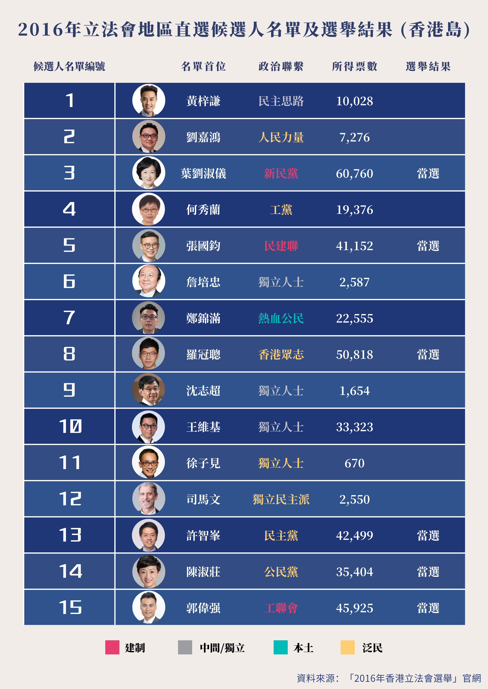

人們普遍認為，香港的忠誠政黨，或建制派政黨，往往在不太富裕的社區獲得更多支持，但事實真的如此嗎？
為了回答這個問題，本工作坊基於2016年立法會地區直選中香港島選區（LC1）的投票結果，深入探究80個區議會選區（District Council Constituency Area）選民對建制派候選者的支持率與個選區居民每月主要職業收入中位數（不包括外籍家庭傭工）之間的聯繫。
這裡，候選者支持率的計算方法為：(候選者在各區議會選區所得票數/16年各選區登記選民人數)*100%。
16年立法會選舉中，建制派參選名單首位候選者包括3號葉劉淑儀，5號張國鈞與15號郭偉強，分別來自新民黨，民建聯以及工聯會。三人均在是次選舉中成功當選。

首先，將三位候選者所獲支持率相加以查看建制派候選人各選區支持率與每月主要職業收入中位數之分佈散點圖。
總體而言，建制派候選人支持率與選區居民每月主要職業收入中位數呈現「U型」關係——收入中位數區間為10,000-20,000港元和大於40,000港元支持率較高，而收入中位數區間為20,000-40,000港元支持率相對較低。
葉劉淑儀於居民每月主要職業收入中位數區間大於30,000港元的選區可以收穫較高的支持率，這與她所代表的新民黨以中產階級選民為主要對象，政策措施多惠及中產有關。
相較而言，民建聯張國鈞及工聯會郭偉強獲得較高支持率則均來自居民每月主要職業收入中位數區間10,000-20,000港元不太富裕的選區。